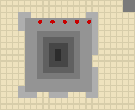
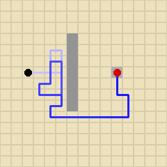
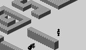
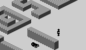
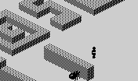
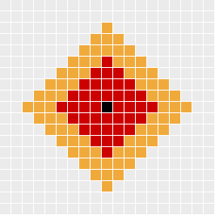
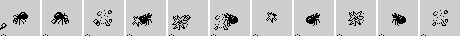

| Ant Attack | How the ants hunt |
Five ants, all moved by the same few routines: MOVE_ANTS gives each its turn through ANT_TURN, and MOVE_ANT moves it. They do very little -- step, look at the distance to the player, turn -- and the city does the rest. This page takes them apart one piece at a time, running the game's own code on set pieces for each.
The one trick everything else hangs on. MOVE_ANT takes the ant out of the map before it moves -- TOGGLE_MAP_BIT flips the bit for its height in its cell -- moves it like anything else, and flips the bit in its new cell. Between turns, every ant is a block. So nothing needs a test for ants: the player walks into one as into a wall, stands on one as on a wall, and PLANES draws one as a wall until its sprite takes the block's place (see the drawing). One ant's turn, on top of a wall one block high, the two cells it moves between watched in the simulator:
| The cell it leaves | The cell it enters | |
|---|---|---|
| Before the ant's turn | $03 | $01 |
| After the first TOGGLE_MAP_BIT: out of the map | $01 | $01 |
| After MOVE_OR_RESPAWN: a step, x +5 | $01 | $01 |
| After the second TOGGLE_MAP_BIT: back in, where it is now | $01 | $03 |
$03 is the wall's block at height 0 with the ant at height 1 on it; $01 the wall alone. It has to be an XOR both ways, so the map and the ant's record must always agree: an ant whose record were moved without its bit would leave a block behind and put one in its own cell -- and find itself “bitten” (below). Which is presumably why BASIC's DATA leaves the ants' x, y and height alone at the start of each level (the dashes in the record table on how people move) and sends them home through the explosion countdown instead: MOVE_ANT then takes each out where the map has it and puts it back at home.
The ants' homes, from the DATA, are five cells in a row at ground level. The map has nothing at height 0 there but blocks above: they are inside the stepped pyramid near the middle of the city, which is hollow at the bottom. The map byte of each home cell, read from the game:
| Home (x, y, height) | Map byte there | |
|---|---|---|
| Ant 1 | $BA, $A8, 0 | $03 |
| Ant 2 | $B8, $A8, 0 | $02 |
| Ant 3 | $B6, $A8, 0 | $02 |
| Ant 4 | $B4, $A8, 0 | $02 |
| Ant 5 | $B2, $A8, 0 | $02 |

The nest from above (x across, y down), blocks grey by their top height; the homes in red. Every home cell has blocks over it and none on the ground.
An ant goes home when a level starts and when a grenade has blown it up.
The first ant's home is not like the others. Its cell holds $03 in the map as loaded: a block at height 0 as well as the roof -- one of the two pillars at the ends of the nest's front row. Arriving there, the ant XORs its own bit into the cell and so takes the pillar's block out: the map shows the cell empty at ground level while the ant is in it. On its next turn MOVE_ANT takes it out of the map again, which puts the pillar back, and MOVE_OBJECT finds a block in the ant's own cell -- a bite, as far as it can tell. The first frames of a real level (the boy chosen, V pressed at the prompt to start), watching the first ant, the second, and the cell at $BA, $A8:
| Ant 1 | Ant 2 | The pillar's cell | Ant 1's event | |
|---|---|---|---|---|
| The first frame of play begins | $BA, $A8, 0 | $B9, $A8, 0 | $02 | |
| After frame 1 | $BA, $A8, 0 | $BA, $A8, 0 | $03 | bitten |
| After frame 2 | $BA, $A8, 0 | $BA, $A8, 0 | $03 | bitten |
| After frame 3 | $B9, $A8, 0 | $BA, $A8, 0 | $02 | a step |
| After frame 4 | $B9, $A8, 0 | $BA, $A8, 0 | $02 | a step |
| After frame 5 | $B9, $A9, 0 | $B9, $A8, 0 | $03 | a step |
| After frame 6 | $B9, $AA, 0 | $B9, $A8, 0 | $03 | a step |
| After frame 7 | $B9, $AA, 0 | $B9, $A8, 0 | $03 | a step |
| After frame 8 | $B9, $AA, 0 | $B9, $A8, 0 | $03 | a step |
While the pillar reads as empty, the second ant is free to walk into the same cell, and for a few frames two ants and a pillar share one bit of the map. Nothing comes of it that a player would see: HANDLE_EVENTS only looks at the two people's events, the roof stops the bite pushing the ant up, and once both have walked out the pillar is whole again. (Found by running; that the pillar is meant to be there, and the home is simply set one cell too far along, is an inference.)
On each turn MOVE_ANT first takes the ant's step, then compares its distance from the player before and after (DISTANCE: the x and y differences added, no diagonals). There is no looking ahead.
Every ant chases the player; none chases the rescued person (MOVE_ANTS points IY at the player for all five). DIRECTION_TO never answers with a diagonal. Along a row or column it points straight at the target; off them it picks one of the two directions that close the gap by which quarter the target is in. Run for every cell round a target P, x across and y down, each arrow the way an ant there would turn:
| → | → | → | → | ↓ | ↓ | ↓ | ↓ | ↓ |
| → | → | → | → | ↓ | ↓ | ↓ | ↓ | ↓ |
| → | → | → | → | ↓ | ↓ | ↓ | ↓ | ↓ |
| → | → | → | → | ↓ | ↓ | ↓ | ↓ | ↓ |
| → | → | → | → | P | ← | ← | ← | ← |
| ↑ | ↑ | ↑ | ↑ | ↑ | ← | ← | ← | ← |
| ↑ | ↑ | ↑ | ↑ | ↑ | ← | ← | ← | ← |
| ↑ | ↑ | ↑ | ↑ | ↑ | ← | ← | ← | ← |
| ↑ | ↑ | ↑ | ↑ | ↑ | ← | ← | ← | ← |
A pinwheel: in each quarter the ants swing the same way round, so ants closing in from all sides tend to circle the last few cells rather than come straight in. (That reading is inferred from the table, not measured.)
A worked example: the fast ant, three cells short of a wall two blocks high, with the player standing still on the far side. The ants and the player are staged; every step after is the game's. It reached the player's cell on frame 77, having taken 64 steps and turned on the spot 9 times.

The ant's path from above, x across and y down, the line darkening as it goes: the ant starts at the black dot, the player is the red.

Frame 1.
Frame 20.

Frame 40.

Frame 60.
ANT_TURN counts +$0E down every frame, and on the frame it reaches zero the ant does nothing and the count goes back to +$0D. So an ant misses one frame in every +$0D. The first ant's +$0D is 20 in the DATA -- it misses one frame in twenty -- and line 190 pokes the other four with BASIC's sp, which line 10 sets to 2 and line 90 raises to 2 + INT(rescues / 4) from the fourth rescue: 2 on levels 1 to 4, 3 on levels 5 to 8, 4 on levels 9 and 10. So on the first four levels four of the ants move at half speed, and one never slows. Measured: an ant outside the walls, where nothing is in its way, chasing a player far off in a straight line for 60 frames, against the 60 - 60 / +$0D steps the rule gives:
| +$0D | Steps expected | Steps taken |
|---|---|---|
| 2 | 30 | 30 |
| 3 | 40 | 40 |
| 4 | 45 | 45 |
| 20 | 57 | 57 |
The skipped frame is also the only frame on which the ant is left as BLAST_FRAME set it -- which matters below.
An ant's step can take it into the player's cell: the player is not in the map, so nothing stops it. On the player's next move MOVE_OBJECT finds his own cell occupied -- the ant's bit -- and that is a bite: BITTEN records it and pushes him up a block, onto the ant's back. HANDLE_EVENTS takes a point of energy off and says so. The player has 20 points (BASIC's line 220, every attempt). Standing still with an ant three cells away, for 120 frames:
| The ant's +$0D | Bites | First bite on frame | Energy left |
|---|---|---|---|
| 20 | 16 | 4 | 4 |
| 2 | 8 | 6 | 12 |
The bite that takes the last point shows “EATEN ALIVE”, and CHECK_GAME_OVER puts a count of five in $B438: staged with one point left, the bite came on frame 3 and PLAY went back to BASIC after frame 7, four frames later. That is not the end of the game: BASIC puts up “Have another go!” and starts the level again, energy and ammunition full, the clock where it was. Only the clock ends a game (see the rescue).
The rescued person is bitten the same way once she follows the player -- moving, she runs MOVE_OBJECT, which is where bites are found -- and has 20 points of her own; at zero, the attempt is over just the same. While she waits she is never moved, so she cannot be bitten at all: staged with an ant walking through her cell, she was walked through and kept 20 points; the same scene with her following cost her 1.
While a grenade explodes, GRENADE_BLAST runs BLAST_ANT for each ant at the grenade's height: within four cells, along the grid, the ant is blown up -- “GOOD SHOT!” -- and within seven it is stunned for 24 of its turns. At any other height it is untouched. BLAST_ANT run for an ant in every cell round an explosion at the middle, at the same height:

Red: blown up (up to 4 cells away). Orange: stunned (up to 7). Grey: missed.
A blown-up ant stops where it is for its explosion countdown, five of its turns, and then goes home to the nest, whole: nothing kills an ant. A stunned ant does not stand still either: MOVE_ANT compares distances after the (lack of a) move, finds itself no closer, and turns at random, so it spins on the spot until the stun runs out.
The explosion is not always drawn. ANT_TURN sets the blast frame first, but on every turn the ant takes, MOVE_ANT's “not closer” sets the animation frame back to an ordinary ant's; only on the frames the ant skips does the blast frame survive to be drawn. A half-speed ant, blown up by a grenade thrown with S, frame by frame, as PROJECT_SPRITES listed it: $FB, $F8, $F5, $F9, $F4, $FA, $F7, $F9, $F6, $FA, $F5 -- five blast frames and six ant frames, alternating. The fast ant skips one frame in twenty, so it is almost never seen exploding at all. (Found by running; whether it was meant is not known.)

The half-speed ant after the blast, a frame a picture: blast and ant in turn.
A paralysed ant -- one the player has landed on, stunned for good at $FF -- is skipped by ANT_TURN altogether. But BLAST_ANT does not look: it overwrites the stun either way. A paralysed ant staged at three distances from where a grenade thrown with S explodes, the ant as the explosion's frame left it, and the first frame it was seen to move:
| Cells from the explosion | The ant | Moving again |
|---|---|---|
| 3 | blown up (countdown 5), stun count 0 | frame 12 |
| 6 | stunned: the stun count is 24 | frame 54 |
| 9 | missed: still paralysed | not in 60 frames |
So a grenade does not finish off a paralysed ant; it frees it -- sent home whole, or stunned for a while and then back on its feet.
The sprites include four frames of an ant on its back, $F0 to $F3 (on the sprites page). Nothing draws them: an ant's frame is only ever its first frame plus 0 or 1 for the legs, or the blast. A stunned or paralysed ant is drawn standing.